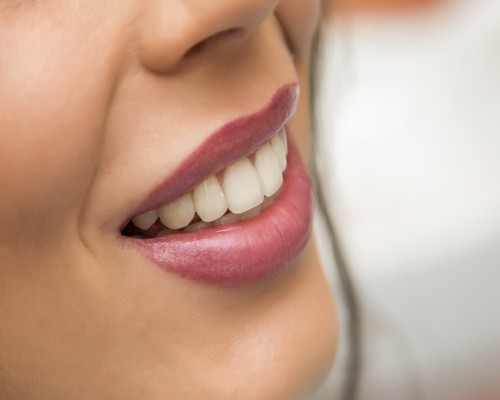

English
English
Hollywood Smile Design- Laminate Veneer in Turkey
Atlantic Dental Clinic-Istanbul
Smile Makeover (Smile Design)

When it comes to dental treatment, the first thing people think of is; toothache, gingival recession, bad breath, irregularities in tooth alignment, tooth discoloration, tooth decay, tooth loss, etc. diseases come. Although these diseases are treated, over time, various aesthetic problems such as deformities in people's teeth, yellowing of the teeth, interdental spaces, dental calculus, crooked teeth, less or more visible teeth, crookedness and gingival recession may occur. These aesthetic problems negatively affect people's psychology and social life. People suppress their smiles, which express their emotional state, which is the most important indicator of the expression in their inner world, by closing their mouths, lose their self-confidence and become asocial. For this reason, in addition to dental treatment in dentistry, dental aesthetics has gained great importance in recent years.
In fact, dental aesthetics is an artistic process applied to the smile of the individual. As a result of technological and scientific advances in recent years, more beautiful smile applications can be made and the term dental aesthetics is heard more frequently. with the effect of its social scene, smile design has ceased to be an application made only by artists, politicians and business people, and has become a very popular application preferred by large segments of society and by anyone who wants to express themselves better in social life. The first application that comes to mind when it comes to dental aesthetics is the smile design application, also known as the Hollywood Smile in the society. In this article, we will provide detailed information about aesthetic smile design.
What is Smile Makeover (Hollywood Smile)?
Smile Makeover; For a healthy and beautiful smile, it is a comprehensive dental aesthetic application in which the patient's smile is given a natural and beautiful appearance by considering the disorders in the teeth and gums, teeth, mouth, jaw structure, lip and facial features according to the patient's demand or needs. There is no single and standard treatment method in smile design practice. During the smile design stage, different applications specific to that individual are performed for each individual. In other words, the smile design is unique to the person and varies from person to person. For this purpose, in the Hollywood smile process, the necessary stages and processes are determined and put into practice to obtain the most beautiful and natural smile. In Hollywood smile, the steps of the whole process are planned from the beginning. with the 3D technologies developed in recent years, the result of the process can be visually shown to the patient during the planning of the treatment. A healthy tooth and gum structure essentially constitutes the main structure of an aesthetic smile. An unhealthy tooth and gum cannot create a smile structure with an aesthetic appearance. In this context, smile makeover application mainly consists of white aesthetic and pink aesthetic parts. While white aesthetics expresses the whole of the applications made on the teeth, the pink aesthetics constitutes the whole of the studies on the gums.
Why is Smile Makeover (Hollywood Smile) important?
Smile Makeover is a cosmetic dentistry application with an artistic feature, which is applied to facial expressions and smiles, which are the expression of one's emotions. with aesthetic smile design, people not only have a natural and aesthetic smile, but also increase their self-confidence by expressing their own spiritual and emotional state in a more free and comfortable way. Now they can smile freely and get rid of the worry of how I will appear in the photos. When they start the day, when they look at their own smiles in the mirror, their self-confidence and self-confidence increase, and they start the day with motivation and walk with strong steps to the positions they deserve as self-confident individuals in social and business life.
Does Smile Makeover (Hollywood Smile) provide only an Aesthetic Smile?
Of course not. In addition to a beautiful smile, you will also have a healthier mouth and teeth structure. with hollywood smile
- Tooth deficiencies
- Tooth enamel abrasions
- Broken and rotten teeth
- Calculus formation
- Gingival recessions and bleeding
- Crooked and crooked teeth
- discolored fills
- such as interdental spaces
You will get rid of the problems and you will have a healthier mouth structure.
Smile Design? Smile Aesthetic?
Smile aesthetics and smile design are two different terms that are confused with each other. In fact, these two concepts have a cause and effect relationship with each other. Smile aesthetics expresses the state of the last smile that emerges after the smile design processes of the individual, while smile design refers to the whole of the work and procedures necessary for the realization of the aesthetic and natural smile that the individual wants and demands. In short, smile aesthetics is the result obtained after smile design.
What can be done with Hollywood Smile in Turkey?
The following applications can be made with Hollywood smile (smile makeover/smile design)
Improvement in tooth color
You can have your colored amalgam fillings the same color as your natural tooth color. with teeth whitening, you can get rid of stains on your teeth. Tooth color is an important consideration in the implementation of many procedures (implants, porcelain veneers, etc.). A discolored tooth gives the feeling of having an old mouth structure, while proportionally white and bright teeth mean a younger appearance. The discoloration of the teeth is removed with the application of teeth whitening (bleaching) and whiter teeth are obtained. Bleaching application is a different application from the polishing applied after tartar cleaning. with the application of teeth whitening (bleaching), the color of the person's teeth can be 2-3 times whiter and brighter.
Alignment and straightening of teeth
Your teeth, which have a crooked and crooked structure and have gaps between them, are aligned with orthodontic or Invisalign treatment method and transformed into a better shape by correcting.
Completion of missing teeth
Missing teeth in the mouth can both spoil the appearance of your smile and cause tooth decay. By completing these missing teeth with implants, bridges and dentures, smile aesthetics and oral health are improved.
Harmony of teeth
Corrections can be applied to your broken, cracked and unequally sized teeth to improve your smile aesthetics.
Lengthening of teeth
As people get older, wear increases and shortens in their teeth. Long teeth allow individuals to have a younger appearance. In this context, with the application of hollywood smile, applications such as lengthening and reshaping the anterior teeth with porcelain veneers, arranging your gum line, determining how long your smile line and teeth will be can be provided.
Dental Veneers
In order to obtain an aesthetic smile, the loss of substance in the teeth due to various reasons (caries, trauma, etc.) can be corrected by restoring the tops of the teeth with metal or non-metallic materials. In this context, zirconium and porcelain veneer are the most common applications. Thus, more aesthetic smiles can be obtained.
Gum aesthetics (Gingivectomy)
Gummy smile; It is the situation where the gums are more prominent than the teeth, that is, the gums are more visible than the teeth during smiling. with the dominant gums in this way, the problem of appearing short of the teeth arises. with gingival aesthetics, the dominant appearance of the gums on the teeth can be reduced, and the person's smile can be made more aesthetic.
What are the types of Hollywood Smile?
Although the smile design application, which has been very popular in the field of aesthetic dentistry recently, is designed specifically for the person, various smile makeover forms that patients often prefer can also be applied. In the application of different types of smile design, the most suitable type of smile design is determined for the person's face. At this stage, care is taken not to lose the naturalness of the person's smile. Of the different types of smile designs, some of the most commonly applied are:
- Sporty Smile Design:
- Hollywood Smile Design:
- Attractive Smile Design:
- Persuasive Smile Design:
- Impressive Smile Design:
- Wise Smile Design:
Sporty smile aesthetics, which is one of the most requested types of smile aesthetics, is a type of application performed in the form of the middle incisors being longer than the lateral incisors.
It is the most popular type of smile design, and it is the type of application where you will have the smile of Hollywood stars.
It is the most preferred type of smile design, and it is the type of application performed by making the front teeth longer than the other teeth.
This type of smile design is an application in which the teeth are intensely polished to reveal a more rounded line.
Designed to give the other person an image of dominance, this type is a type of application in which the anterior incisors are given a round and square shape, and the canine teeth are given a sharper and more pointed shape.
It is a type of application in which the teeth are made to appear more straight and equal to each other than normal in order to provide a more intellectual and wise image to the person.
Apart from the varieties mentioned above; It is available in many more varieties such as youthful smile, natural smile, functional smile design.
How to a Smile Design (Hollywood Smile) in Istanbul? What stages types it consist of?
In the smile design application, one of the following procedures according to the condition of the patient's mouth, teeth, lips and face structure.
- Zirconia veneer
- Porcelain veneers
- Teeth whitening (bleaching)
- Correction of crookedness and crooked teeth (Orthodontic treatment)
- Ensuring harmony between teeth and gums
- Implant
- Treatment of decayed teeth and gum diseases
- Treatment of missing and broken teeth
- Strengthening the teeth
- Correction of space between teeth
- Having the same formal structure of the front teeth
- Bringing the smile to a young and healthy structure
All or some of such applications are implemented within a certain program.
Smile design application mainly consists of 2 steps. These
- STEP 1 - Circumstance detection, planning and design:
- STEP 2 - Treatment and permanent aesthetic application:
- The process of cleaning the teeth
- Treatment of decayed teeth and gum ailments
- Orthodontic treatment application
- Teeth whitening, as needed, after post-surgical recovery
- Aesthetic touches (zirconium or porcelain veneer, smile line, adjustment of tooth ratios, tooth length, etc.)
- Improving the smile with medical aesthetic applications such as lip and cheek filling when necessary.
- Informing the patient in
This stage is very important to understand the patient's expectations for smile aesthetics and to respond correctly to their needs. Because the consequences that will arise as a result of faulty and incorrect planning will cause irreversible problems.
At this stage, the necessary dental treatments and aesthetic touches for the applications determined in the previous stage are started to be applied. These;
At this stage, the necessary dental treatments and aesthetic touches for the applications determined in the previous stage are started to be applied. These;
During the smile makeover, the natural structure is preserved as much as possible and the method that causes the lowest rate of substance loss in the teeth is applied. The material used in the applications may vary according to the condition of the tooth, the aesthetic expectation of the patient and the cost.
How long does the Smile Makeover application take?
As we mentioned before, smile design is a personal application, and the duration of the application varies from person to person. This change varies according to the special demands of the person and the current state of oral and dental health. Because when some individuals smile, the right part of their mouth may be above or below the left part, and some teeth in their mouth may be shorter or longer than other teeth. Therefore, the smile style of each individual has a unique feature. Therefore, it is not a standard method of hollywood smile design application and varies from person to person. Changes to be made; Considering the person's face, mouth, lip structure and the patient's budget, it is determined by mutual negotiations between the patient and the physician and a road map is drawn up. Thus, the estimated implementation time is also determined.
How will I look after Smile Design Treatment?
In order to get the desired result from the smile design to be made, the entire tooth structure is considered together and the facial structure is subjected to a complete evaluation. In recent years, after the great advances in Dentistry Digital Technologies, it is possible to show the patient what kind of smile the patient will have after the treatment with the help of 3D digital images.
Frequently Asked Questions about Hollywod Smile
Since the hollywod smile design application varies from person to person, it is not possible to give an average standard smile design cost. Because the prices may vary according to the situation and wishes of the person. Again, the quality of the material used and the smile makeover can cause price differences. In the first examination, as a result of the interview between the competent dentist and the patient, the price of smile makeover becomes clear after the treatments for smile makeover are determined.
Holywood Smile design can be applied to individuals in the following situations in order for individuals to have a more natural and aesthetic smile. These;
- People with abnormal tooth staining and tooth discoloration
- People with crooked teeth
- People with distorted gingival images
- People with differences in tooth length
- People with missing teeth in their mouth
- People with incompatible appearance between teeth and gums
- People with mouth closing problems
- People with irregular appearance and bad impression in the length of their teeth
Apart from these, it is an application that anyone who wants different looks in smile aesthetics can have.
For hollywood smile design, it is appropriate to be 20 years old and above. Because body development continues at the age of 20 and below, your smile aesthetics that you get with the applications can change.
One of the most curious subjects by patients is whether the smile design application is difficult. In fact, this treatment method is not as difficult as it is thought. However, since this treatment method is individual, the difficulty situation may vary from person to person according to the content and scope of the treatment to be applied. But it would not be wrong to say that for a good smile aesthetic, it is worth enduring the difficulties of smile design treatment.
In the smile design application, your natural teeth are not damaged. Because the goal in smile design is to protect natural teeth and make them look healthier. Therefore, there is nothing to worry about with your natural teeth.
One of the most curious questions of individuals who are considering a hollywood smile design is whether the smile aesthetic is permanent or how long it will last. Two factors determine how long the smile aesthetic will last. These; dentist and patient. Of these, the dentist is responsible for applying the right method and appropriate procedure during the smile design phase. For this reason, smile makeover applications should be planned in detail and applied with precision. within the scope of some procedures applied, your teeth may need to be taken care of by your dentist at certain periods. The patient's attention and sensitivity in post-treatment oral and dental care is also important in the permanence of smile aesthetics. Brushing, flossing, etc. Correct oral care practices can extend the permanence of the application. In this context, it is also important to have dental cleaning once a year and routine dentist checks every 6 months. Because during routine check-ups, if there are applications that you do wrong or incomplete, your doctor will notice you and make the right applications. If these issues are taken into consideration, the smile design application can be longer lasting. For this reason, making the right applications and following your dentist's recommendations will provide the opportunity to have a longer-lasting dental aesthetics. 'Lifetime guaranteed smile aesthetics' is not a realistic expression and it is not correct to give such a guarantee. For this reason, it is not possible to talk about an average time for smile aesthetics.
What are Laminated Teeth, Dental Veneer, Composite Veneer, Lamination Teeth?

It is a type of veneer that is veneered with a minor filling on the tooth. This treatment applied on healthy teeth is also known as leaf tooth coating veneers. A laminated tooth veneer is performed by covering teeth that have been damaged over time and have lost their usefulness and aesthetic appearance with synthetic materials. A lamination tooth veneer is the treatment method that best protects your teeth compared to other prosthetic treatments with a tiny filing on your natural teeth. This treatment, which provides an aesthetic smile, has been used by many artists. Composite laminate, without damaging the teeth of the individual, is an aesthetic and cosmetic restoration made with composite material on tooth surfaces to change the color tone of the tooth, eliminate the deformity, enlarge the tooth, and give the tooth an aesthetic appearance. with laminated teeth, it is possible to eliminate yellowed teeth caused by cigarette, coffee and tea consumption. Thanks to this application, patients get natural and white-looking teeth. Laminated tooth coating is suitable for long-term use. After the laminate coating process, the teeth become more durable. For the best results in laminated tooth application, the veneer process should be performed by specialist dentists in dental clinics. It requires a lot of attention and skill.
Why do people Laminate their Teeth?
A laminated tooth veneer is a necessary treatment that should be applied to prevent the loss of teeth that are likely to be lost. It allows us to get rid of teeth that have lost their strength, are worn and are in danger of breaking. It offers the opportunity to use one's teeth for longer years. In addition to making the teeth more aligned and aesthetic, It is an application that contributes to oral and dental health.
Is Venners of Teeth good – How Dental Veneers are appllied?
- The patient is asked about the reason for having this operation and his expectations after the operation. The patient is informed about what can be done based on what has been said. Controls and tests are carried out for the operation. Then, the patient's consent is obtained by making appropriate modeling for the patient.
- Local anesthesia is applied without filing the patient's teeth. In this way, the patient does not feel aches, pains or pain during the filing process. He only hears the sound of the instruments used. The etching process is done for the laminate coating to fit the tooth properly. After the etching process, the coating size of the teeth to be made lamina tooth is taken.
- Temporary porcelain dental veneers are attached to prevent damaged teeth that have been cleaned and filed during laboratory studies—the patient's comfort in waiting for the permanent leaf porcelain to arrive increases.
- After the measurement process, an average of one week is waited without making a second operation on the teeth. During this one week, sensitivity can be seen in the filed teeth.
- The leaf tooth coating layer to be applied to the tooth is prepared to be very thin. with the thin veneer plate, the closest veneer to the patient's natural tooth appearance is obtained.
- When the tooth molds are ready, a rehearsal is done. The color match between the leaf laminated and natural teeth is checked.
- When the patient and the doctor confirm that the appearance of the teeth is as desired, the laminate veneer process is started.
- The process takes about 2 hours. The patient's treatment is completed when the bonding process of the laminated dental veneers is completed. The patient can continue his daily life after the application.
How long do Veneers take to complate?

Although there is an increase in the number of sessions depending on the number of teeth coated with porcelain lamina and the teeth structure, if situations require preliminary preparation for the patient, the leaf tooth coating process ends in an average of 3 sessions.
On which Tooth surface is a Veneer placed?
- Laminate tooth veneer is applied to gain an aesthetic smile in anterior tooth distortions caused by congenital reasons, in case of irregular elongation, or deformities caused by decay.
- Laminate tooth veneer application is preferred to repair and restore the natural appearance of teeth that have undergone any impact, physical trauma or broken for some reason after their strength is checked.
- For a beautiful smile and perfect and balanced tooth lengths, leaf veneer is applied when teeth are desired to be extended.
- It is applied to individuals with dark teeth, for whom no results can be obtained from whitening procedures.
- Laminate veneer is preferred in decayed anterior teeth when it is necessary to clean caries and correct the destruction in the tooth.
- It can be an alternative to braces treatment. In patients who have not accepted orthodontic treatments due to aesthetic concerns, difficulty maintaining the braces, and patients with split and crooked teeth, lamination is performed when the physician deems it appropriate.
- It is applied to people who need additional treatment to orthodontic treatment.
- It has been applied to protect the natural teeth of people with enamel disorders for many years.
- It is a type of veneer that is frequently used in patients who are not satisfied with the shape and posture of their teeth.
How do you take care of your Teeth after Veneers?
- Teeth should be brushed regularly, mouthwash should be made, and dental floss should be used for the care of laminated tooth coating.
- Those with laminated teeth should use a night plate if there is a problem with night clenching or grinding after tooth coating.
- To use the laminated tooth veneer for many years, the habit of biting nails should be abandoned, and hard foods with teeth and shells should not be broken.
- Six months after the porcelain lamina treatment for maintenance, a dentist should be visited, and the condition of the laminate application should be checked.
What are the advantagesof using Veneers?
- Teeth are treated without deteriorating their natural structure.
- The thin porcelain layer used in laminate tooth coating eliminates the problem of yellowing teeth with tea, cigarette and coffee stains.
- As a result of the treatment, the laminate gains natural white color and natural tooth form as it passes light. It does not look like there is a coating on the teeth.
- Laminate veneer can be applied to a single tooth or more than one tooth.
- It creates a smooth surface on the tooth coating.
- The coating is highly resistant to breakage.
- The adhesive used in the laminated tooth coating process is a medical and strong adhesive. In this way, the correctly applied leaf coating does not fall off.
- It is very easy to get used to because the amount of rasping in the laminated tooth coating is minimal.
- Laminated dental veneers do not require a different maintenance process. Daily oral care is sufficient to use the coating for a long time.
- The treatment period is short, and the results are long-lasting.
Frequently Asked Questions about Laminate Veneers In Istanbul
Considerations when calculating Laminated Teeth prices:
- The quality of the material to be used, the dollar-euro exchange rate of the laminated tooth since the materials are imported products,
- Number of teeth to be laminated,
- The cost of procedures such as preliminary preparation, gingival care, filling procedures required before starting the treatment,
- Experience of the physician performing the laminated tooth procedure,
- Pricing of the laboratory service where the laminated tooth will be made,
- Whether the payment is in advance or installments,
Laminate veneer causes changes in tooth price. As a result of the decision taken by the Turkish Dentists Association, dental treatment fees are determined each year by private hospitals and public hospitals. The clinic where the application will be made has the right to price the procedure under the price policy. The patient should do the necessary research on the price. Even among private clinics in different districts, the price of laminate teeth may differ.
Care for regular teeth is necessary for laminated teeth. When taking care of the teeth and paying attention to oral and dental hygiene, the life of the leaf-covered tooth is 15-20 years. In cases where oral, dental and gingival care is not taken care of, the life of the coating may decrease to 5-10 years.
Correctly made laminated veneer teeth do not fall out.
Laminated veneer teeth can be applied to anyone with permanent teeth. However, since the filing will be minimal in the leaf porcelain tooth process, this treatment cannot be applied to people who have previously had veneer treatments such as porcelain and zirconium.
Veneers are made from the highest quality ceramic. Veneers teeth do not lose their color and shine. It is not affected by teeth-yellowing foods and beverages such as cigarettes, tea, and coffee. If the yellowing is observed in a tooth with a laminated tooth veneer, this occurs when the tooth itself turns yellow as a result of the patient losing the vitality of the tooth.